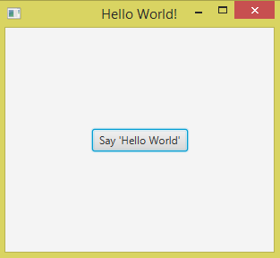

Hello JavaFX
"1000 langkah bermula dari satu langkah pertama"
Macam biasa, jika kita jumpa teknologi baru kita akan cuba bina program
yang paling simple iaitu memaparkan Hello, World!.
Untuk membuat program JavaFX menggunakan Netbeans, klik File
kemudian New Project. Pilih kategori JavaFX dan pilih projek
JavaFX Application. Selepas klik Next, kita diberi pilihan untuk
menamakan nama projek kita. Namakan projek tersebut apa-apa sahaja, jadi
sebagai contoh kita namakan projek ini sebagai HelloJavaFX.
Setelah selesai, kita akan dapat projek dengan file seperti ini:
package hellojavafx;
import javafx.application.Application;
import javafx.event.ActionEvent;
import javafx.event.EventHandler;
import javafx.scene.Scene;
import javafx.scene.control.Button;
import javafx.scene.layout.StackPane;
import javafx.stage.Stage;
public class HelloJavaFX extends Application {
@Override
public void start(Stage primaryStage) {
Button btn = new Button();
btn.setText("Say 'Hello World'");
btn.setOnAction(new EventHandler<ActionEvent>() {
@Override
public void handle(ActionEvent event) {
System.out.println("Hello World!");
}
});
StackPane root = new StackPane();
root.getChildren().add(btn);
Scene scene = new Scene(root, 300, 250);
primaryStage.setTitle("Hello World!");
primaryStage.setScene(scene);
primaryStage.show();
}
/**
* @param args the command line arguments
*/
public static void main(String[] args) {
launch(args);
}
}
Selepas run, akan keluar GUI seperti berikut:

Jika kita klik button tersebut, akan terpapar Hello World! di
terminal.
Tahniah, anda telah berjaya membuat GUI menggunakan JavaFX!
Sekarang kita akan lihat apa yang sebenarnya berlaku pada code tersebut.
Control
Control (atau widget) ialah benda yang membolehkan interaksi antara user dengan program. Contohnya button, tempat untuk menulis text (text field), tempat untuk melukis (canvas), dan sebagainya. Kita boleh create control dengan cara create object untuk control tersebut seperti code di atas.
Control merupakan class jadi setiap control mempunyai method yang
tersendiri. Contoh seperti di atas, kita menggunakan method
setText() untuk menentukan text yang tertulis pada button
tersebut.
EventHandler
EventHandler ialah code yang kita letakkan pada sesebuah control.
Tugasnya ialah menunggu interaksi daripada user. Selepas user
berinteraksi dengannya, maka dia akan melaksanakan code yang ditugaskan.
Contoh di atas, EventHandler tersebut menunggu user untuk tekan
button tersebut. Selepas ditekan, EventHandler akan paparkan Hello
World!.
Pane
Control tidak boleh tergantung di skrin begitu sahaja. Control memerlukan tapak untuk diletakkan. Tapak ini disebut sebagai Pane. Dalam JavaFX ada pelbagai jenis Pane. Contoh di atas, kita menggunakan StackPane sebagai tapak kepada button tersebut. Kita boleh menggunakan,
pane.getChildren().add(control);
untuk menambah control pada Pane tersebut.
Stage dan Scene
JavaFX menggunakan konsep Stage (pentas) dan Scene (babak).
Contohnya di lakonan teater, lakonan tersebut berada di atas satu pentas, dan dibahagikan kepada beberapa babak. Setiap babak mempunyai prop yang berlainan.
Dalam JavaFX juga sama, satu program boleh berada di atas satu program window, dan boleh dibahagikan kepada beberapa scene. Setiap scene mempunyai control yang berlainan.
Contoh code di atas, kita hanya menggunakan satu stage dan satu scene sahaja.